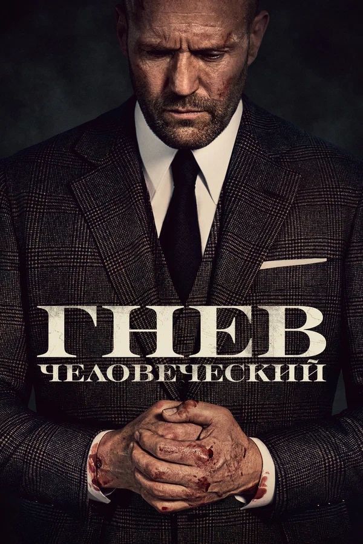
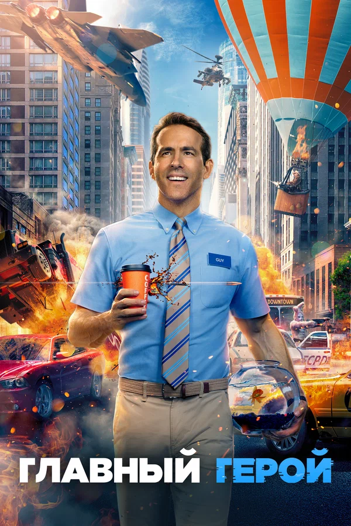
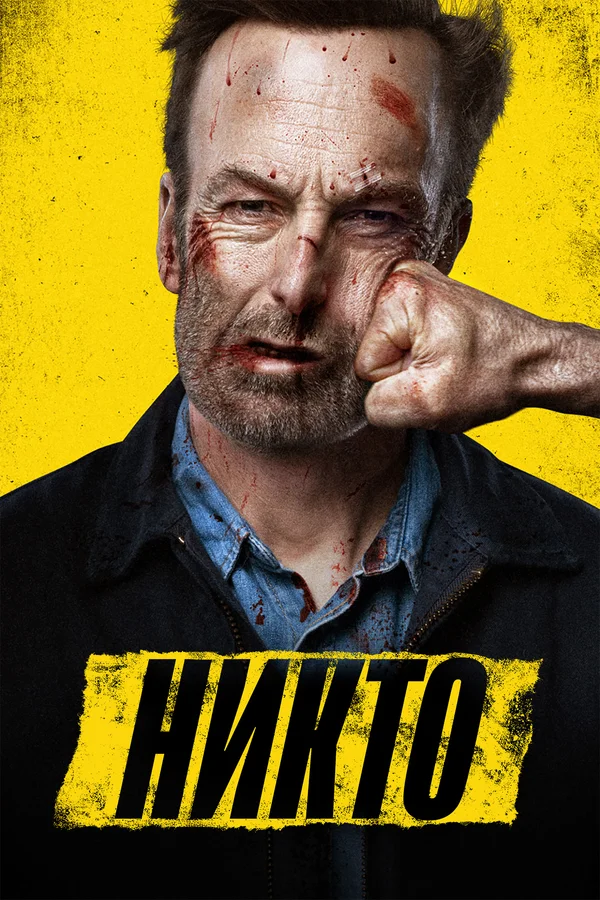

Топ - 10 фильмов 2021-го года
-
1. Дюна

Оценка по версии кинопоиска: 7.7
Наследник знаменитого дома Атрейдесов Пол отправляется вместе с семьей на одну из самых опасных планет во Вселенной — Арракис. Здесь нет ничего, кроме песка, палящего солнца, гигантских чудовищ и основной причины межгалактических конфликтов — невероятно ценного ресурса, который называется меланж. В результате захвата власти Пол вынужден бежать и скрываться, и это становится началом его эпического путешествия. Враждебный мир Арракиса приготовил для него множество тяжелых испытаний, но только тот, кто готов взглянуть в глаза своему страху, достоин стать избранным.
Смотреть трейлер -
2. Гнев человеческий
Оценка по версии кинопоиска: 7.6
Грузовики лос-анджелесской инкассаторской компании Fortico Security часто подвергаются нападениям, и во время очередного ограбления погибают оба охранника. Через некоторое время в компанию устраивается крепкий немногословный британец Патрик Хилл. Он получает от босса прозвище Эйч и, впритык к необходимому минимуму пройдя тесты по фитнесу, стрельбе и вождению, отправляется на первое задание. Вскоре и его грузовик пытаются ограбить вооруженные налётчики, но Эйч в одиночку расправляется с целой бандой и становится героем. Кажется, слава и уважение коллег его совершенно не интересуют, ведь он преследует свои цели.
Смотреть трейлер -
3. Круэлла
Оценка по версии кинопоиска: 7.6
Великобритания, 1960-е годы. Эстелла была необычным ребёнком, и особенно трудно ей было мириться со всякого рода несправедливостью. Вылетев из очередной школы, она с мамой отправляется в Лондон. По дороге они заезжают в особняк известной модельерши по имени Баронесса, где в результате ужасного несчастного случая мама погибает. Добравшись до Лондона, Эстелла знакомится с двумя мальчишками — уличными мошенниками Джаспером и Хорасом. 10 лет спустя та же компания промышляет на улицах британской столицы мелким воровством, но Эстелла никак не может оставить мечту сделать карьеру в мире моды. Хитростью устроившись в фешенебельный универмаг, девушка привлекает внимание Баронессы, и та берёт её к себе в штат дизайнеров.
Смотреть трейлер -
4. Главный герой
Оценка по версии кинопоиска: 7.4
Парень по имени Парень счастлив. Он живет в лучшем в мире городе Городе, работает на лучшей в мире работе в Банке и дружит с охранником по имени Приятель. И его совершенно не волнует, что Банк грабят по нескольку раз на дню, а улицы Города напоминают зону военных действий. Единственное, чего Парню не хватает для полного счастья — идеальной девушки, к которой у него имеется точный список требований. И вот однажды он видит на улице красотку, точь-в-точь как в его мечтах. Эта встреча изменит не только нашего главного героя, но и перевернёт весь известный ему мир.
Смотреть трейлер -
5. Лига справедливости Зака Снайдера

Оценка по версии кинопоиска: 7.8
Вдохновившись самопожертвованием Супермена, Брюс Уэйн вновь обретает веру в человечество. Он заручается поддержкой новой союзницы Дианы Принс, чтобы сразиться с ещё более могущественным противником. Бэтмен и Чудо-женщина набирают команду сверхлюдей для борьбы с пробудившейся угрозой.
Смотреть трейлер -
6. Шан-Чи и легенда десяти колец
Оценка по версии кинопоиска: 7.3
Много сотен лет назад амбициозный воин Сюй Вэньу завладел волшебным боевым артефактом — десятью кольцами, с помощью которых он победил всех врагов и создал тайную организацию. На протяжении веков он собирал армию и тайно вмешивался в ход мировой истории, но в 1996 году встретил прекрасную девушку, мастера боевых искусств скрытой от посторонних глаз деревни Та Ло, остепенился и завёл семью. Сан-Франциско, 25 лет спустя. Парень Шон работает обычным парковщиком, а вечера проводит в караоке с подругой и коллегой Кэти — большой любительницей скоростных автомобилей. Однажды по дороге на работу на приятелей нападают хорошо подготовленные воины с целью забрать у Шона подаренный матерью медальон.
Смотреть трейлер -
7. Никто
Оценка по версии кинопоиска: 7.4
Непримечательный и незаметный семьянин Хатч живёт скучной жизнью обычного аудитора, пока однажды в его дом не вламываются грабители. И это бы сошло им с рук, если бы они не забрали браслетик его маленькой дочки. Не в силах это терпеть, Хатч отправляется на поиски наглецов, а на обратном пути ввязывается в драку с пьяными хулиганами, пристававшими к девушке в общественном транспорте. От души помахав кулаками, наш аудитор отправляет дебоширов в больницу, но оказывается, что один из пострадавших — брат влиятельного русского бандита. И он теперь жаждет мести.
Смотреть трейлер -
8. Человек-паук: Нет пути домой

Оценка по версии кинопоиска: 7.9
Жизнь и репутация Питера Паркера оказываются под угрозой, поскольку Мистерио раскрыл всему миру тайну личности Человека-паука. Пытаясь исправить ситуацию, Питер обращается за помощью к Стивену Стрэнджу, но вскоре всё становится намного опаснее.
Смотреть трейлер -
9. Своя война. Шторм в пустыне
Оценка по версии кинопоиска: 7.4
Иван давно вернулся с войны. Но война не отпускает его: он продолжает в нее играть, что уже стоило ему отношений с женой, а теперь может стоить и жизни. Иван отправляется в Сирию под видом иностранного военного корреспондента по имени Джон.
Смотреть трейлер -
10. Не смотрите наверх
Оценка по версии кинопоиска: 7.5
Астрономы открывают новую комету и, рассчитав её траекторию, узнают, что через полгода она столкнётся с Землёй, что положит конец существованию человечества и всего живого на планете. Двое учёных с трудом добиваются аудиенции у президента США, но там к их предупреждению относятся с недоверием, тогда они выступают в популярной телепередаче, но большинство всё равно не воспринимает угрозу всерьёз.
Смотреть трейлер